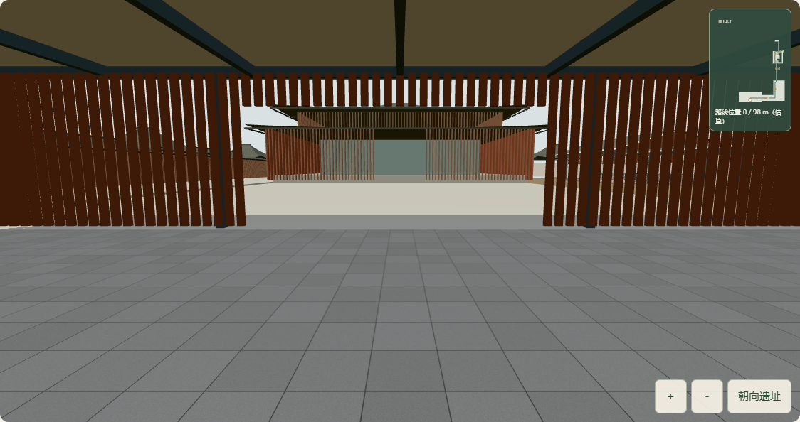
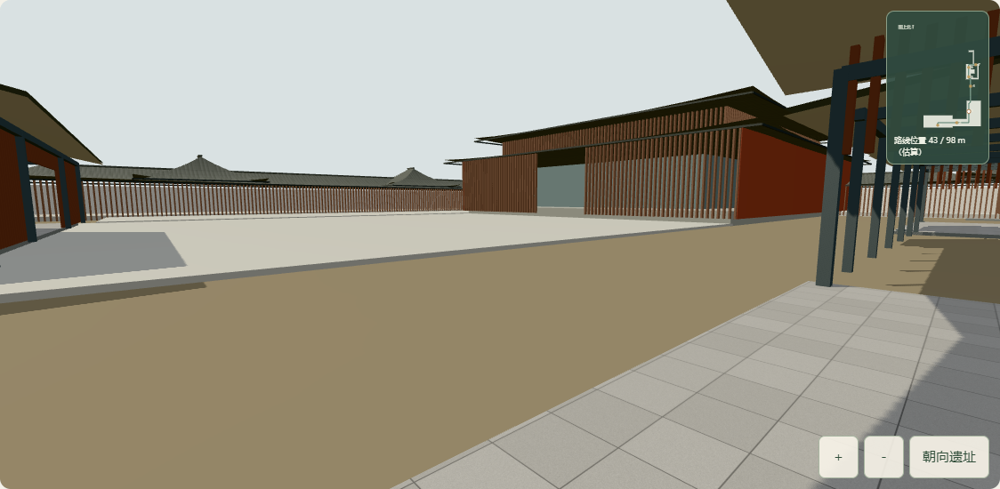
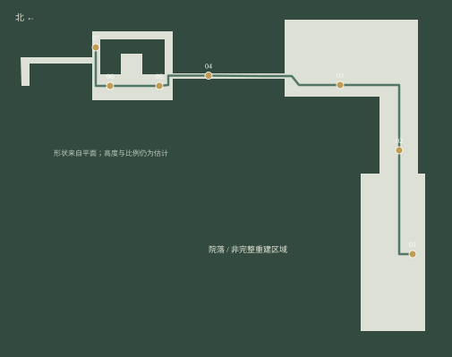
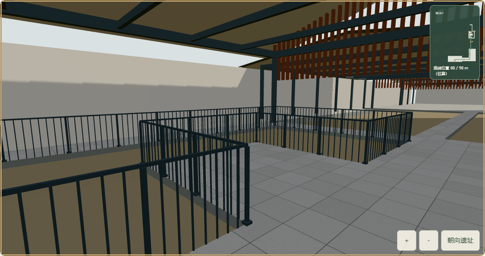
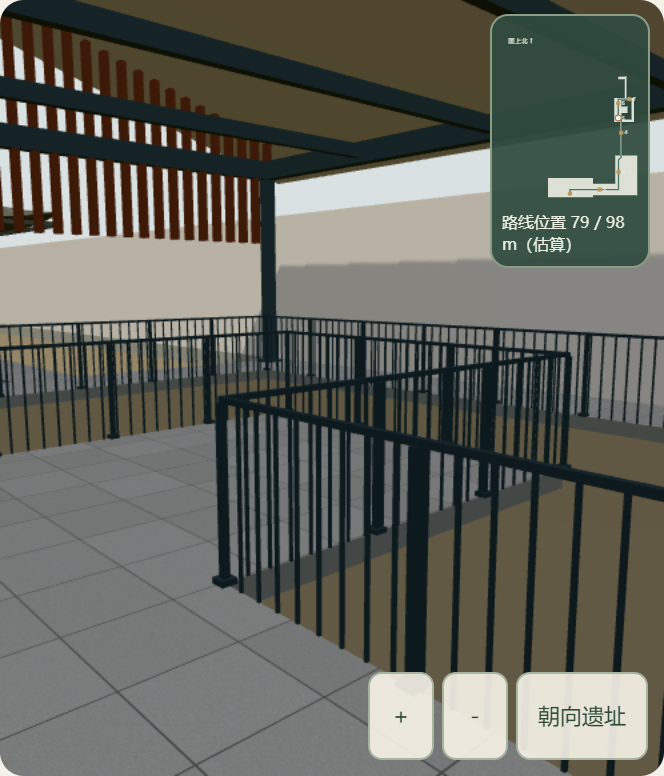

问山 · 有据的空间观察 / 2026.10.03从龙虎门内侧
沿通道走向东路
大上清宫 · 现代保护展示设施 · 资料模型原来的约 29 米东路局部栈道，已接入南侧入口与东路展廊之间的连续通道。可从龙虎门内侧走过七个观察位置，暂停、转头、对照相应区域实拍，再回到原外部镜头。
97.60 m模型内路线，尺度估算
07依平面设置的观察节点
6.84 MB进入时才加载的 GLB
仍未完成真实内部还原。连续行走始于龙虎门内侧，外部台阶尚未纳入；高差、构件尺寸和材质仍为照片参考下的展示估计。考古坑只表示范围与近似下凹，遗物、墙基细部、部分展厅及院落材料尚未重建。这不是实拍全景，也不能用于现场导航。
打开问山网站 ↗景点地图「大上清宫」→「前往宫观入口」→「接近南侧入口」→「从入口进入有据参观路线」。拖动或方向键观察，PageUp / PageDown 换站，空格暂停；手动观察和自动转向状态均可在实拍往返后恢复。
入口与院落，保留对应实拍对照
照片与模型视线未做相机标定，角度不同；用于核对所在区域与构件关系。
 实拍资料｜从龙虎门内侧回望南侧棂星门。THAD / 五季摄影；与右侧模型朝向不同。
实拍资料｜从龙虎门内侧回望南侧棂星门。THAD / 五季摄影；与右侧模型朝向不同。
实际网页截图｜模型从龙虎门内侧起步。外部台阶和门外接近过程仍是独立场景。 新增对应实拍｜庭院鹅卵石遗迹及东路展廊；原文发布于 2023-12-20，准确拍摄日期未知。
新增对应实拍｜庭院鹅卵石遗迹及东路展廊；原文发布于 2023-12-20，准确拍摄日期未知。
实际网页截图｜有据的通道和周围构件。实拍中的鹅卵石、考古墙基与细部仍有缺失，不将空白区域称为完整复原。按同一张平面连接七个观察位置

依据 THAD 一层平面自行描线：浅色为纳入模型的现代通道，绿线为移动路径。北在左。沿用既有平面到影像的估算配准。模型内检查了 3,905 个路线采样点，中心与周围 20 厘米探测点都有地面；最近障碍约 0.405 米。87 个沿用场地构件重设坐标原点后，与原外部模型相差小于百万分之一米。七节点转换后均落在同一来源设施范围内。这些检查证明模型之间相互一致，不能证明现场测量精度。

06 · 遗址观览平台。遗址坑的细部仍未重建；原 29 米局部模型和源文件继续保留。
实际网页连续行走
实际 Three.js 画布录制，47.96 秒。镜头随通道转弯，抵达后看向观察对象；原始 WebM 未转码。录制有采集开销，以下性能数据来自另一次独立采样。
操作与恢复验证
- 模型与路线按需加载
- 入口键盘进入、沿完整折线移动
- 暂停、位置图和区域实拍一致
- 自动转向与手动观察状态恢复
- 拖动、方向键、双指与缩放
- 途中照片往返后继续原目标
- 外部视角、目标及页面位置恢复
- 内部期间暂停区域镜头和动画
- 下载失败、WebGL 中断及重试
- 减少动态效果可直接选择节点
- 下载中关闭无迟到画布
- 五次切换均释放几何、材质及位图
32 项现有项目测试、TypeScript 和生产构建通过。路线专项 30 项、录制/下载中止/地理对应 3 项、持续行走与资源 3 项检查通过。正常流程无脚本或着色器错误。故障测试中的下载失败为主动注入。
实际测量条件与差异
| 生产页面内的测试 | 实际画布 | 平均 FPS | 帧耗时 p95 |
|---|
| 入口静止 · 8 秒 | 1124 × 594 | 137.8 | 7.5 ms |
| 整段连续行走 · 50 秒 | 1124 × 594 | 141.6 | 7.1 ms |
| 全程结束后 · 8 秒 | 1124 × 594 | 137.6 | 7.6 ms |
| 5 次实拍往返后 · 8 秒 | 1124 × 594 | 141.2 | 7.1 ms |
Windows · Chrome/154.0.8037.93 · Intel UHD / ANGLE D3D11，1920 × 1080 浏览器视口，模型画布为 1124 × 594。整段测试包括约 44 秒移动与末端停留；不是整个景区的稳定帧率下限。
保留异常测量：早先含截图的路线检查曾测得约 28.9 FPS；同一画面的独立截图对照为截图前 144.2 FPS、截图后 143.8 FPS、再建画布后 142.4 FPS。这些结果分别保留，不把最高值替代所有条件。最终含截图的手机视口检查：390 × 844、实际画布 498 × 582，8 秒平均 144.1 FPS，p95 7.1 ms。它不是实体手机成绩，真实手机与长期稳定性仍未验证。

同一桌面 GPU 上的手机视口与触摸模拟。